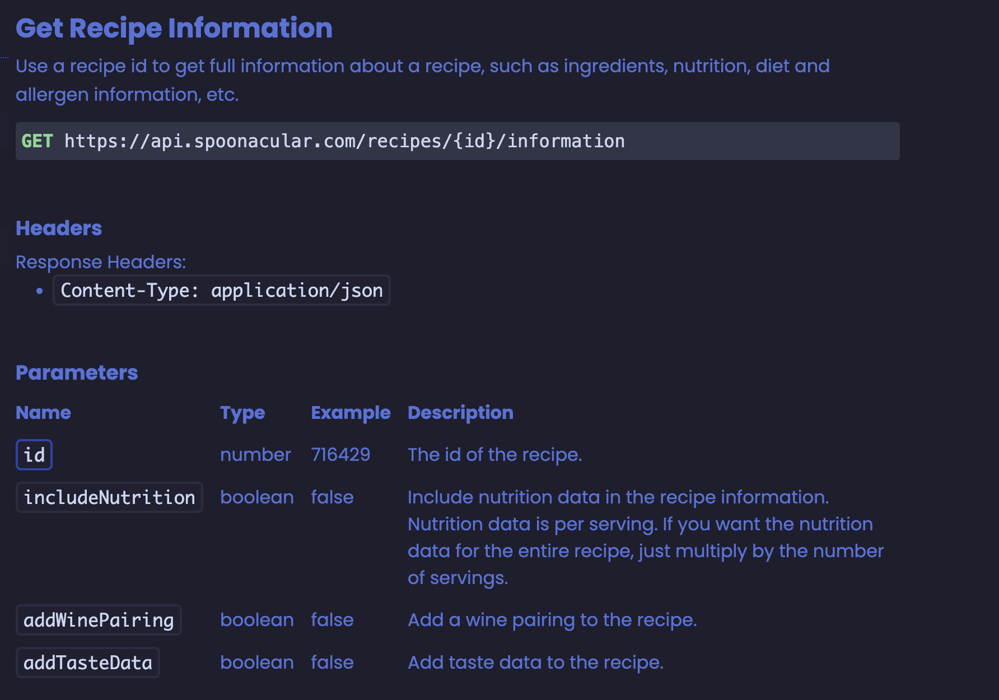
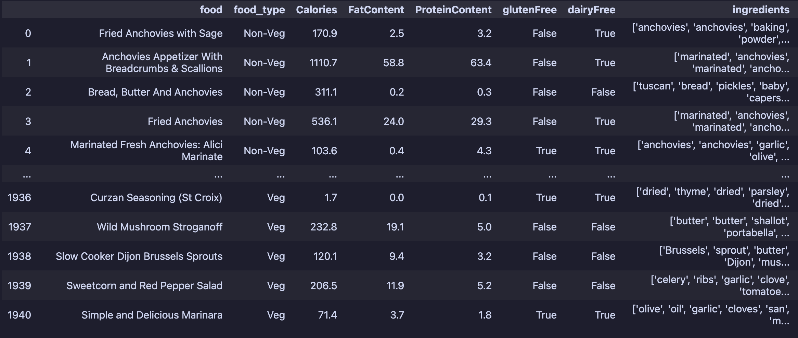
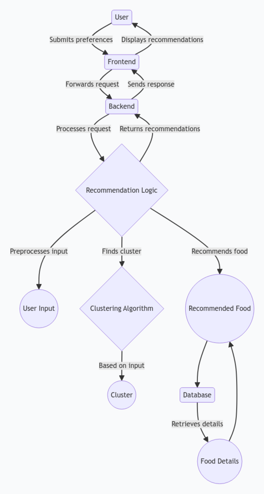

How does Foodinator work?
Foodinator is a simple web application that allows users to search for food items based on their preferences.
Data Collection
The data for Foodinator was collected from the Spoonacular API. The API provides a wide range of food items and their descriptions, ingredients, and nutritional information.
In order to collect the data, we used the requests library in Python to make HTTP requests to the "Get Recipe Information" endpoint of the Spoonacular API. We then parsed the JSON response and extracted the relevant information such as the food item name, description, ingredients, and nutritional information.
The data was collected in batches of 50 food items at a time, and we collected a total of 2000 food items for training the machine learning models.

Data Processing
Once we collected the data, we processed it to extract the relevant information and store it in a structured format. We used Python to process the data and store it in a CSV file for easy access.
This is how the data is structured:

Machine Learning Model(s)
We trained 5 different machine learning models to predict the nutritional information of a food item based on its ingredients. The models we used are:
- K-Means Clustering
- Nearest Neighbors
- K-Nearest Neighbors
- Support Vector Machine
- Neural Network
Each model was trained on a subset of the data and evaluated to ensure its accuracy.
The silhouette score was used to evaluate the performance of the clustering models, while the accuracy score was used for the classification models and the neural network.
Silhouette score is a measure of how similar an object is to its own cluster compared to other clusters. The score ranges from -1 to 1, where a higher value indicates better clustering.
Accuracy score is the proportion of correct predictions made by the model.
The silhouette score for the K-Means Clustering model was 0.014 and for the K-Nearest Neighbors model was 0.48.
The accuracy score for the Nearest Neighbors model was 0.945, for the Support Vector Machine model was 0.68, and for the Neural Network model was 0.72.
Based on these scores, we selected the K-Means Clustering model as the best model for giving recommendations to users based on their preferences.
| Machine Learning Model | Description | Silhouette Score | Accuracy Score |
|---|---|---|---|
| K-Means Clustering | A clustering algorithm used to group similar food items based on their nutritional information. | 0.014 | N/A |
| Nearest Neighbors | A classification algorithm that predicts nutritional information based on the similarity of food items in the dataset. | N/A | 0.945 |
| K-Nearest Neighbors | A variation of the Nearest Neighbors algorithm that considers the K closest neighbors to predict nutritional information. | 0.48 | N/A |
| Support Vector Machine | A classification algorithm that separates food items into different classes based on their nutritional features. | N/A | 0.68 |
| Neural Network | A deep learning model used to predict nutritional information by learning patterns and relationships in the data. | N/A | 0.72 |
Model pipeline
The model pipeline consists of the following steps:
- First we convert the food items into a vector representation using the TF-IDF vectorizer.
- Then we apply the K-Means Clustering model to cluster the food items based on their vector representations.
- Next, we filter the food items based on the ingredients provided by the user.
- Finally, we recommend the top 5 food items from the cluster that contains the most similar food items to the user's preferences.
Database
Based on the recommended food items, we extract the relevant information such as the food item description, image, ingredients, and instructions from the database and display it to the user.
Recommendation System
There are two main components of the recommendation system in Foodinator:
-
The first recommendation system in Foodinator works by taking the user's input in the form of ingredients, Food type, allergies, and dietary restrictions. The system then uses the K-Means Clustering model to cluster the food items based on their vector representations. It then filters the food items based on the user's input and recommends the top 5 food items from the cluster that contains the most similar food items to the user's preferences.
-
The second recommendation system in Foodinator works by taking the user's input in the form of a food item name. The system then uses the cosine similarity metric to find the most similar food items to the user's input and recommends the top 5 food items based on the similarity score.
Web Application
The web application is built using the FastAPI framework in Python. It consists of two main components:
- Home Page: The home page of the web application gives a brief overview of the application and their functionalities.
- Recommendation Page: The recommendation page allows users to input their preferences and get recommendations based on their input.
- Output Page: The output page displays the recommended food items to the user.
For more information, please refer to the following sections of the documentation:
- Modules
- API Reference
Flow Diagram
